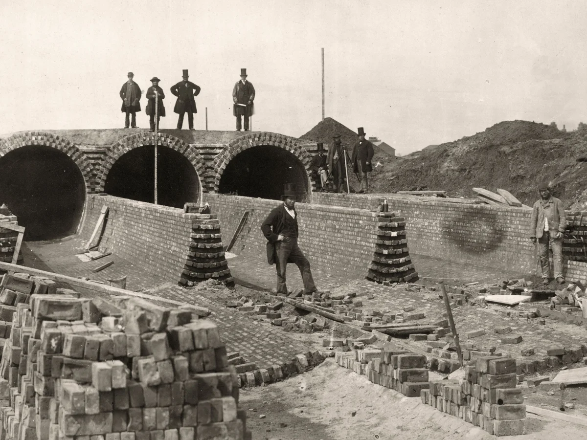

The Great Stink of London
The Summer of 1858: During an unusually hot and dry July, the River Thames in London—which had served as a dumping ground for the city's raw sewage, industrial chemicals, and slaughterhouse waste for centuries—hit a breaking point. The water levels dropped, and the heat began to "cook" the layers of human waste along the banks.

The tragedy was not an explosion, but a total atmospheric failure. The smell, known as the Great Stink, was so overpowering that it shut down the city. Parliament had to drape its windows in curtains soaked in chloride of lime to mask the scent, and lawmakers eventually fled the building. The public believed in the "Miasma Theory"—the idea that "bad air" itself carried diseases like cholera. While the smell didn't actually cause cholera (which is waterborne), the fear it generated paralyzed the most powerful city in the world.
The Birth of Modern Civil Engineering: The immediate strategy was Panic-Driven Legislation. Within 18 days of the peak of the smell, Parliament passed a bill to completely re-engineer the city's waste disposal.
The Intercepting Sewer Strategy: Joseph Bazalgette, a brilliant civil engineer, designed a massive network of 82 miles of main intercepting sewers and 1,100 miles of street sewers. His strategy was to capture the waste before it reached the Thames and pump it far to the east, away from the city.
Key Facts
Date: July and August 1858
Location: London, England (River Thames)
Casualties: 0 immediate deaths from the smell (but thousands from related cholera outbreaks due to water contamination)
Cause: Urban Infrastructure and Sanitation Crisis (Massive accumulation of raw sewage in the Thames during an unprecedented heatwave)
The "Future-Proofing" Goal: Bazalgette made a legendary strategic decision: he calculated the required diameter for the pipes based on London's population, and then he doubled it. He famously noted that "this is only going to be done once." Because of this foresight, London’s Victorian sewers are still largely in use today.
The Embankment Strategy: To house these massive pipes, the city built the Victoria, Albert, and Chelsea Embankments. This reclaimed land from the river and modernized the city's layout, providing a new strategy for urban transport and green space.
The Great Stink is the ultimate case study in Reactionary Investment. It teaches us that a government often refuses to fund critical infrastructure until the consequences become literally "unbearable." It highlights the strategy of Over-Engineering as a virtue; if Bazalgette had only built for the needs of 1858, London would have collapsed under its own growth by 1900.